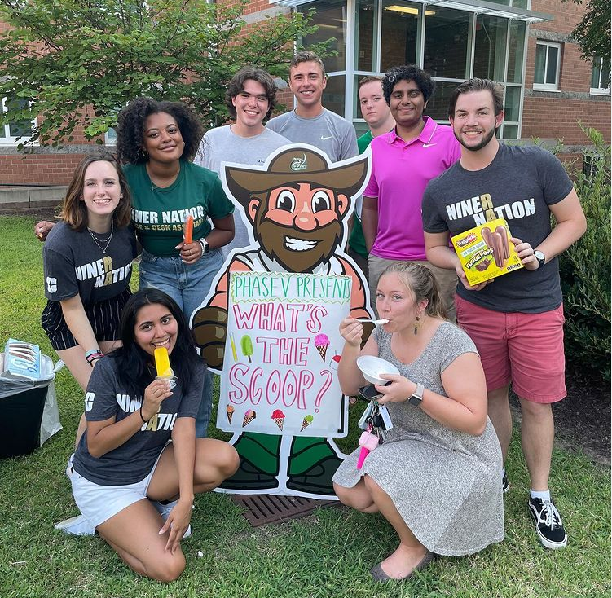
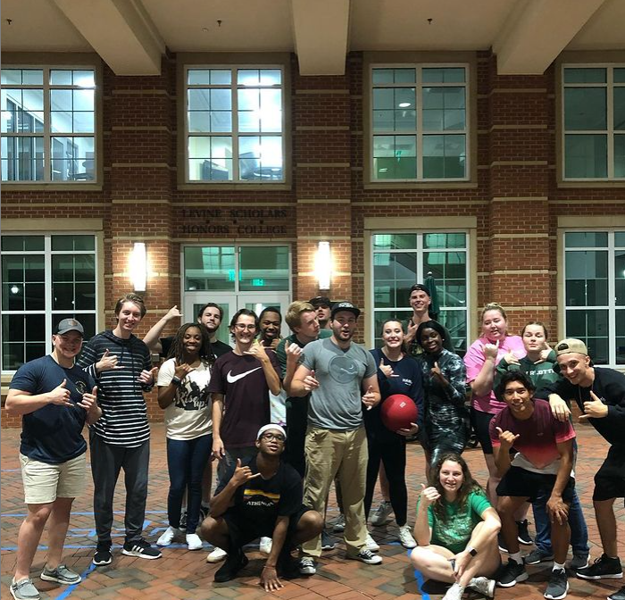
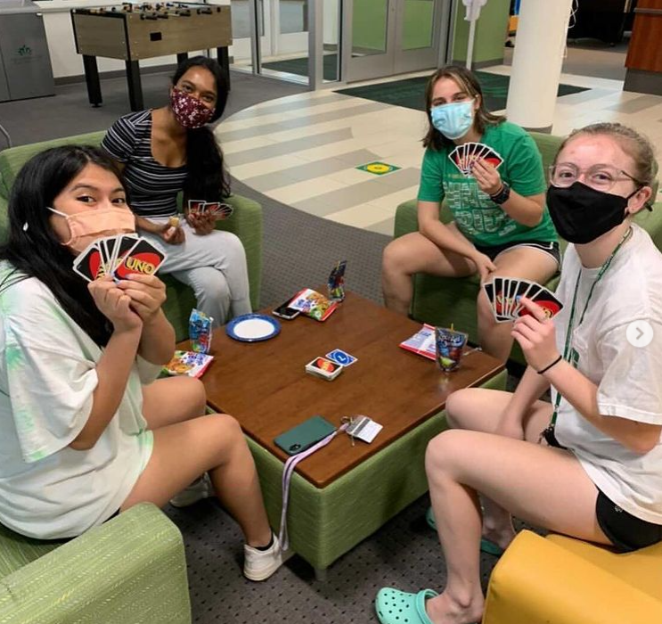

Welcome to the RA Program Manager
The RA Program Manager is a system that allows for RAs and Residents to stay connected with the newest events!
Programs are separated by the following learning goals
- Academic Success
- Admin
- Community Responsibility
- Intercultural Compentence
- Life Skills
- Social
- Wellness
Photo Gallery




